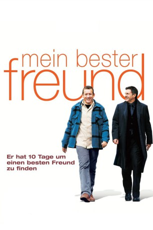
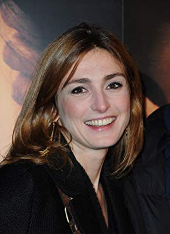

#3085 Mein bester Freund
 
 IMDB-Wertung: 6.7 / 10
IMDB-Wertung: 6.7 / 10  Metascore: 65
Metascore: 65 
Französische Komödie über einen Antiquitätenhändler, der nur für seine Arbeit lebt und keine Freunde hat. Durch eine Wette muss er innerhalb von 10 Tagen einen besten Freund vorweisen. Regisseur Patrice Leconte gewann Darsteller wie Daniel Auteuil oder Julie Gayet.
Jahr: 2006
Dauer: 94 Minuten
FSK: 0
Land: Frankreich Studio: Alamode FilmTonspuren:
Untertitel: Deutsch,
Auflösung: 1080p (1920x824) Größe: 7987 MB
Genre: Komödie
Regisseur: Patrice Leconte
Drehbuch: Olivier Dazat, Patrice Leconte, Jérôme Tonnerre
Soundtrack: Xavier Demerliac
Darsteller:
 Daniel Auteuil als François
Daniel Auteuil als François Dany Boon als Bruno
Dany Boon als Bruno-  Julie Gayet als Catherine
- Audrey Marnay als Marianne
- Julie Durand als Louise
 Jacques Mathou als Père Bruno
Jacques Mathou als Père Bruno- Marie Pillet als Mère Bruno
- Élizabeth Bourgine als Julia
- Henri Garcin als Delamotte
- Jacques Spiesser als Letellier
 Philippe du Janerand als Luc Lebinet
Philippe du Janerand als Luc Lebinet- Fabienne Chaudat als Épouse Lebinet
- Jean-François Kopf als Commissaire priseur
- Alain Rimoux als Marchand dîner
- Marc Faure als Ami dîner 1
- Éric Frey als Ami dîner 2
- Etienne Draber als Conférencier
- Eric Naggar als Bigleux
- Anne Le Ny als Femme casting Réponse à tout
- Pierre Aussedat als Homme casting Réponse à tout
 Andrée Damant als Dame train
Andrée Damant als Dame train- Isabelle Spade als Banquière
- Alain Choquet als Patron TV
- Jean-Luc Mimo als Prêtre
- Marie Mergey als Veuve
- Sylvie Herbert als Chauffeur taxi 1
- Omar Bekhaled als Chauffeur taxi 2
- Zoon Besse als Chauffeur taxi 3
- Jean-Claude Bolle-Reddat als Ami empourpré 1
- Patrice Bornand als Ami empourpré 2
- Christian Gazio als Déménageur
- Rosine Young als Libraire
- Cyril Couton als Collègue libraire
- Nicky Marbot als Savoyard appartement
- Yvon Martin als Savoyard galerie
- Jeupeu als Savoyard Drouot
- Caroline Frank als Hôtesse Delamotte
- Eric Grandin als Maître d'hôtel
- Brigitte Defrance als Dame vestiaire
- Serge Faliu als Voix SOS Amitiés
- Jean-Pierre Foucault als Himself
- Titouan Laporte als Léonardo , uncredited
Datei: X:\2006(G-M)\Mein bester Freund (2006, FSK0, 1920x824).mkv seit 22.01.2016
Festplatte: HD 2005(G-Z)-2006(A-Z)
 Es gibt insgesamt 48 Filme in der Gruppe '2006(G-M)'
Es gibt insgesamt 48 Filme in der Gruppe '2006(G-M)'